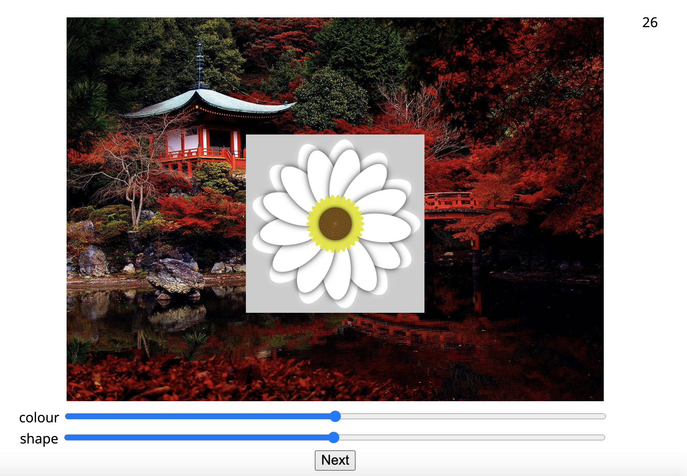

<!DOCTYPE html>
<html lang="en">
<head>
    <meta charset="UTF-8">
    <title>Category Learning Task</title>
    <script src="jspsych-6.1.0/jspsych.js"></script>
    <script src="jspsych-6.1.0/plugins/jspsych-html-keyboard-response.js"></script>
    <script src="jspsych-6.1.0/plugins/jspsych-html-button-response.js"></script>
    <script src="jspsych-6.1.0/plugins/jspsych-image-button-response.js"></script>
    <script src="jspsych-6.1.0/plugins/jspsych-image-bkg-keyboard-response.js"></script>
    <script src="jspsych-6.1.0/plugins/jspsych-external-html.js"></script>
    <script src="jspsych-6.1.0/plugins/jspsych-external-html-flower-recon.js"></script>
    <script src="jspsych-6.1.0/plugins/jspsych-instructions.js"></script>
    <script src="js/underscore-min.js"></script> 
    <script src="js/category_var.js"></script>
    <script src="js/jquery.csv.js"></script>

    <link href="jspsych-6.1.0/css/jspsych.css" rel="stylesheet" type="text/css"></link>

    <style type="text/css">
        html,
        body {
            height: 100%;
        }
        
        /* Scale canvas with resize attribute to full size */
        canvas[resize] {
            width: 30%;
        }
    </style>

</head>

<script>
    window.globals = {x1: 180, x2: 10, x3: 9};
    var timeline = [];

    /**************************************************** set up ****************************************************/

    // generate a random subject ID with 15 characters
    var subject_id = jsPsych.randomization.randomID(15);

    // general experiment settings
    var instruction_time = 5000;
    var waiting_time = 3;
    var count_down = waiting_time;
    var num_trials = 48; // number of learning trials (multiple of 4) - usually 48
    
    // feedback and instruction images
    var ins_img = ['assets/img/instructions/example_learning_trial.png', 'assets/img/instructions/example_recon_trial.png','assets/img/instructions/japanese_garden.jpg', 'assets/img/instructions/recon_dials.png'];
    var feedback_img = ['assets/img/feedback/smile.png', 'assets/img/feedback/smile.png'];
    var category_img = ['assets/img/sun.png', 'assets/img/cloud.png']

    // category learning task
    var fixation_time = 1000;
    var stim_time = 3500;
    var bkg_time = 500;
    var feedback_time = 1000;
    var stim_question = "Is this <i>sun-preferring</i> or <i>shade-preferring</i>?";
    var pos_feedback_img = 'assets/img/feedback/smile.png';
    var pos_feedback_aud = 'assets/audio/positive.wav';
    var neg_feedback_img = 'assets/img/feedback/frown.png';
    var neg_feedback_aud = 'assets/audio/negative.wav';

    // old/new recognition task
    var rec_time = 1500;
    var rec_iti = 1000;
    var rec_question = "Is this image old or new?";

    // reconstruction task
    var recon_time = 30000;
    var recon_count_down = recon_time/1000;

    // instructions 
    var learning_ins = 'Welcome!<br> Your task in this experiment is to sort flowers into categories.<br><br>\
                    In each trial, you will see a flower on top of a decorative mat for '+stim_time/1000+' seconds.<br>\
                    The flower will then disappear and the mat will remain on screen for '+bkg_time/1000+' seconds.<br><br>\
                    You will be asked if the flower prefers <i>sun</i> or <i>shade</i>.\
                    <br>You have until the mat disappears ('+(bkg_time+stim_time)/1000+' seconds) to make your choice.<br><br>\
                    <div style="display:flex; align-items:center; margin: 0% 25% 0% 25%;"">\
                            <div style="float:left; width:15%; vertical-align: middle;">\
                                </img></div>\
                            <div style="float:left; width:10%; vertical-align: middle;">\
                                <p style="font-size:300%">&#8592;</p></div>\
                            <div style="float:left; width:50%; vertical-align: middle;">\
                                </img></div>\
                            <div style="float:left; width:10%; vertical-align: middle;">\
                                <p style="font-size:300%">&#8594;</p></div>\
                            <div style="float:left; width:15%; vertical-align: middle;">\
                                </img></div>\
                    </div>\
                    <br><div style="text-align: center; clear: both"> The decorative mat is not relevant to the category decision.<br>\
                    Press "&#8592;" if you think the flower prefers <i>sun</i>.<br>\
                    Press "&#8594;" if you think the flower prefers <i>shade</i>.<br><br>\
                    You will receive feedback after responding to an image.<br>\
                    At the beginning of the task, you will be mostly guessing. That is okay, make your best guess and use the feedback to learn.<br><br>\
                    Please make your responses as quickly and accurately as possible.</div>';

    var start_ins = '<br>Once you have finished reading the instructions, <br>please place your fingers on the "&#8592;" and "&#8594;" keys.<br><br> Press "&#8594;"" to begin.<br><br>';
   
    var learning_complete = "Great job! You have completed the category learning phase of this experiment.<br><br>\
                              The computer will move on to the next task in 90 seconds.<br>";

    var test_instructions = "The next part of this experiment is a memory test for <br>the decorative mats you saw behind the flowers.<br><br>";                          

    var rec_instructions = 'In each trial, you will judge whether you saw the image as a decorative mat during the category learning phase.<br><br>\
                            <div style="display:flex; align-items:center; margin: 0% 25% 0% 25%;">\
                            <div style="float:left; width:33%; vertical-align: middle;">\
                                <p style="font-size:200%">Old &#8592;</p>\
                            </div>\
                            <div style="float:left; width:33%; vertical-align: middle;">\
                                </img>\
                            </div>\
                            <div style="float:left; width:33%; vertical-align: middle;">\
                                <p style="font-size:200%">&#8594; New</p>\
                            </div>\
                            </div>\
                            <br><div style="text-align: center; clear: both"> If you have seen the exact same picture before in this experiment, press "&#8592;".<br>\
                            If you have not seen this exact picture, press "&#8594;"".<br><br>\
                            You will have '+rec_time/1000+' seconds to respond.<br><br>\
                            Please make your responses as quickly and accurately as possible.<br><br></div>'; 

    var rec_test_complete = "Good work! You have completed the decorative mat memory test.<br><br>\
                            The computer will move on to the next task in 90 seconds.<br>";

    var test2_instructions = "For the final part of this experiment, <br>we are going to test your memory for the <i>flower</i> you saw with each decorative mat.<br><br>";    

    var recon_instructions = 'In each trial, you will see a flower on top of a decorative mat you saw during the category learning phase.</p>\
                        Think back to the specific colour and shape of the flower you saw with this mat.<br>\
                        Using your mouse to adjust the dials at the bottom of the screen, do your best to recreate the colour and shape of the flower you saw as closely as possible.<br><br>'+
                        '</img>'+
                        '<p>When you are finished, click "Next" with your mouse to save your answer and proceed to the next trial.</p>'+
                        'You will have a maximum of '+recon_time/1000+' seconds to respond and a countdown will appear in the top right corner of the screen.<br>'+
                        'If after a few seconds you cannot remember the flower, make your best guess.<br><br>'+
                        "Please make your responses as precise as possible.<br><br>";

    var recon_start_ins = '<br>Once you have finished reading the instructions, please press "Next" to begin.<br><br>';
  
    var recon_test_complete = "Great job! You have completed the experiment.<br><br>\
                            Please proceed to the debriefing.<br><br>";

    var next_trial_ins = 'Start the next task<br><br>';

    // all background scenes (for loading)
    var all_backgrounds = [
            'assets/img/backgrounds/abbey.jpg', 'assets/img/backgrounds/abbey_2.jpg',
            'assets/img/backgrounds/airfield.jpg', 'assets/img/backgrounds/airfield_2.jpg',
            'assets/img/backgrounds/alcove.jpg', 'assets/img/backgrounds/alcove_2.jpg',
            'assets/img/backgrounds/amphitheatre.jpg', 'assets/img/backgrounds/amphitheatre_2.jpg',
            'assets/img/backgrounds/amusement_park.jpg', 'assets/img/backgrounds/amusement_park_2.jpg',
            'assets/img/backgrounds/apartment_building.jpg', 'assets/img/backgrounds/apartment_building_2.jpg',
            'assets/img/backgrounds/aqueduct.jpg', 'assets/img/backgrounds/aqueduct_2.jpg',
            'assets/img/backgrounds/arch.jpg', 'assets/img/backgrounds/arch_2.jpg',
            'assets/img/backgrounds/archive.jpg', 'assets/img/backgrounds/archive_2.jpg',
            'assets/img/backgrounds/arena_hockey.jpg', 'assets/img/backgrounds/arena_hockey_2.jpg',
            'assets/img/backgrounds/art_studio.jpg', 'assets/img/backgrounds/art_studio_2.jpg',
            'assets/img/backgrounds/artist_loft.jpg', 'assets/img/backgrounds/artist_loft_2.jpg',
            'assets/img/backgrounds/athletic_field.jpg', 'assets/img/backgrounds/athletic_field_2.jpg',
            'assets/img/backgrounds/attic.jpg', 'assets/img/backgrounds/attic_2.jpg',
            'assets/img/backgrounds/auditorium.jpg', 'assets/img/backgrounds/auditorium_2.jpg',
            'assets/img/backgrounds/auto_factory.jpg', 'assets/img/backgrounds/auto_factory_2.jpg',
            'assets/img/backgrounds/auto_showroom.jpg', 'assets/img/backgrounds/auto_showroom_2.jpg',
            'assets/img/backgrounds/badlands.jpg', 'assets/img/backgrounds/badlands_2.jpg',
            'assets/img/backgrounds/bakery.jpg', 'assets/img/backgrounds/bakery_2.jpg',
            'assets/img/backgrounds/balcony_interior.jpg', 'assets/img/backgrounds/balcony_interior_2.jpg',
            'assets/img/backgrounds/ball_pit.jpg', 'assets/img/backgrounds/ball_pit_2.jpg',
            'assets/img/backgrounds/ballroom.jpg', 'assets/img/backgrounds/ballroom_2.jpg',
            'assets/img/backgrounds/bamboo_forest.jpg', 'assets/img/backgrounds/bamboo_forest_2.jpg',
            'assets/img/backgrounds/banquet_hall.jpg', 'assets/img/backgrounds/banquet_hall_2.jpg',
            'assets/img/backgrounds/bar.jpg', 'assets/img/backgrounds/bar_2.jpg',
            'assets/img/backgrounds/barn.jpg', 'assets/img/backgrounds/barn_2.jpg',
            'assets/img/backgrounds/baseball_field.jpg', 'assets/img/backgrounds/baseball_field_2.jpg',
            'assets/img/backgrounds/basilica.jpg', 'assets/img/backgrounds/basilica_2.jpg',
            'assets/img/backgrounds/basketball_court.jpg', 'assets/img/backgrounds/basketball_court_2.jpg',
            'assets/img/backgrounds/bathroom_public.jpg', 'assets/img/backgrounds/bathroom_public_2.jpg',
            'assets/img/backgrounds/bay_window.jpg', 'assets/img/backgrounds/bay_window_2.jpg',
            'assets/img/backgrounds/bayou.jpg', 'assets/img/backgrounds/bayou_2.jpg',
            'assets/img/backgrounds/bazaar_outdoors.jpg', 'assets/img/backgrounds/bazaar_outdoors_2.jpg',
            'assets/img/backgrounds/beach.jpg', 'assets/img/backgrounds/beach_2.jpg',
            'assets/img/backgrounds/beach_house.jpg', 'assets/img/backgrounds/beach_house_2.jpg',
            'assets/img/backgrounds/beauty_salon.jpg', 'assets/img/backgrounds/beauty_salon_2.jpg',
            'assets/img/backgrounds/bedroom.jpg', 'assets/img/backgrounds/bedroom_2.jpg',
            'assets/img/backgrounds/beer_garden.jpg', 'assets/img/backgrounds/beer_garden_2.jpg',
            'assets/img/backgrounds/berth.jpg', 'assets/img/backgrounds/berth_2.jpg',
            'assets/img/backgrounds/bistro_indoor.jpg', 'assets/img/backgrounds/bistro_indoor_2.jpg',
            'assets/img/backgrounds/bistro_outdoor.jpg', 'assets/img/backgrounds/bistro_outdoor_2.jpg',
            'assets/img/backgrounds/boardwalk.jpg', 'assets/img/backgrounds/boardwalk_2.jpg',
            'assets/img/backgrounds/boat_deck.jpg', 'assets/img/backgrounds/boat_deck_2.jpg',
            'assets/img/backgrounds/boathouse.jpg', 'assets/img/backgrounds/boathouse_2.jpg',
            'assets/img/backgrounds/bookstore.jpg', 'assets/img/backgrounds/bookstore_2.jpg',
            'assets/img/backgrounds/botanical_gardens.jpg', 'assets/img/backgrounds/botanical_gardens_2.jpg',
            'assets/img/backgrounds/boxing_ring.jpg', 'assets/img/backgrounds/boxing_ring_2.jpg',
            'assets/img/backgrounds/bridge.jpg', 'assets/img/backgrounds/bridge_2.jpg',
            'assets/img/backgrounds/bull_ring.jpg', 'assets/img/backgrounds/bull_ring_2.jpg',
            'assets/img/backgrounds/bus_interior.jpg', 'assets/img/backgrounds/bus_interior_2.jpg',
            'assets/img/backgrounds/bus_station.jpg', 'assets/img/backgrounds/bus_station_2.jpg',
            'assets/img/backgrounds/butte.jpg', 'assets/img/backgrounds/butte_2.jpg',
            'assets/img/backgrounds/cabin.jpg', 'assets/img/backgrounds/cabin_2.jpg',
            'assets/img/backgrounds/cafeteria.jpg', 'assets/img/backgrounds/cafeteria_2.jpg',
            'assets/img/backgrounds/campus.jpg', 'assets/img/backgrounds/campus_2.jpg',
            'assets/img/backgrounds/canal_natural.jpg', 'assets/img/backgrounds/canal_natural_2.jpg',
            'assets/img/backgrounds/candy_store.jpg', 'assets/img/backgrounds/candy_store_2.jpg',
            'assets/img/backgrounds/canyon.jpg', 'assets/img/backgrounds/canyon_2.jpg',
            'assets/img/backgrounds/car_back_seat.jpg', 'assets/img/backgrounds/car_back_seat_2.jpg',
            'assets/img/backgrounds/carrousel.jpg', 'assets/img/backgrounds/carrousel_2.jpg',
            'assets/img/backgrounds/castle.jpg', 'assets/img/backgrounds/castle_2.jpg',
            'assets/img/backgrounds/catacombs.jpg', 'assets/img/backgrounds/catacombs_2.jpg',
            'assets/img/backgrounds/cathedral_indoor.jpg', 'assets/img/backgrounds/cathedral_indoor_2.jpg',
            'assets/img/backgrounds/chalet.jpg', 'assets/img/backgrounds/chalet_2.jpg',
            'assets/img/backgrounds/childs_room.jpg', 'assets/img/backgrounds/childs_room_2.jpg',
            'assets/img/backgrounds/classroom.jpg', 'assets/img/backgrounds/classroom_2.jpg',
            'assets/img/backgrounds/cliff.jpg', 'assets/img/backgrounds/cliff_2.jpg',
            'assets/img/backgrounds/closet.jpg', 'assets/img/backgrounds/closet_2.jpg',
            'assets/img/backgrounds/clothing_store.jpg', 'assets/img/backgrounds/clothing_store_2.jpg',
            'assets/img/backgrounds/cockpit.jpg', 'assets/img/backgrounds/cockpit_2.jpg',
            'assets/img/backgrounds/coffee_shop.jpg', 'assets/img/backgrounds/coffee_shop_2.jpg',
            'assets/img/backgrounds/conference_room.jpg', 'assets/img/backgrounds/conference_room_2.jpg',
            'assets/img/backgrounds/construction_site.jpg', 'assets/img/backgrounds/construction_site_2.jpg',
            'assets/img/backgrounds/convention_center.jpg', 'assets/img/backgrounds/convention_center_2.jpg',
            'assets/img/backgrounds/coral_reef.jpg', 'assets/img/backgrounds/coral_reef_2.jpg',
            'assets/img/backgrounds/corn_field.jpg', 'assets/img/backgrounds/corn_field_2.jpg',
            'assets/img/backgrounds/corral.jpg', 'assets/img/backgrounds/corral_2.jpg',
            'assets/img/backgrounds/cottage.jpg', 'assets/img/backgrounds/cottage_2.jpg',
            'assets/img/backgrounds/cottage_garden.jpg', 'assets/img/backgrounds/cottage_garden_2.jpg',
            'assets/img/backgrounds/courthouse.jpg', 'assets/img/backgrounds/courthouse_2.jpg',
            'assets/img/backgrounds/courtyard.jpg', 'assets/img/backgrounds/courtyard_2.jpg',
            'assets/img/backgrounds/creek.jpg', 'assets/img/backgrounds/creek_2.jpg',
            'assets/img/backgrounds/crosswalk.jpg', 'assets/img/backgrounds/crosswalk_2.jpg',
            'assets/img/backgrounds/cubicle.jpg', 'assets/img/backgrounds/cubicle_2.jpg',
            'assets/img/backgrounds/dam.jpg', 'assets/img/backgrounds/dam_2.jpg',
            'assets/img/backgrounds/deli.jpg', 'assets/img/backgrounds/deli_2.jpg',
            'assets/img/backgrounds/desert.jpg', 'assets/img/backgrounds/desert_2.jpg',
            'assets/img/backgrounds/desert_road.jpg', 'assets/img/backgrounds/desert_road_2.jpg',
            'assets/img/backgrounds/desert_vegetation.jpg', 'assets/img/backgrounds/desert_vegetation_2.jpg',
            'assets/img/backgrounds/diner.jpg', 'assets/img/backgrounds/diner_2.jpg',
            'assets/img/backgrounds/dining_room.jpg', 'assets/img/backgrounds/dining_room_2.jpg',
            'assets/img/backgrounds/dock.jpg', 'assets/img/backgrounds/dock_2.jpg',
            'assets/img/backgrounds/doorway.jpg', 'assets/img/backgrounds/doorway_2.jpg',
            'assets/img/backgrounds/elevator_lobby.jpg', 'assets/img/backgrounds/elevator_lobby_2.jpg',
            'assets/img/backgrounds/escilator.jpg', 'assets/img/backgrounds/escilator_2.jpg',
            'assets/img/backgrounds/fastfood_restaurant.jpg', 'assets/img/backgrounds/fastfood_restaurant_2.jpg',
            'assets/img/backgrounds/galley.jpg', 'assets/img/backgrounds/galley_2.jpg',
            'assets/img/backgrounds/general_store_indoors.jpg', 'assets/img/backgrounds/general_store_indoors_2.jpg',
            'assets/img/backgrounds/greenhouse.jpg', 'assets/img/backgrounds/greenhouse_2.jpg',
            'assets/img/backgrounds/gymnsium.jpg', 'assets/img/backgrounds/gymnsium_2.jpg',
            'assets/img/backgrounds/hanger_indoors.jpg', 'assets/img/backgrounds/hanger_indoors_2.jpg',
            'assets/img/backgrounds/hardware_store.jpg', 'assets/img/backgrounds/hardware_store_2.jpg',
            'assets/img/backgrounds/home_theatre.jpg', 'assets/img/backgrounds/home_theatre_2.jpg',
            'assets/img/backgrounds/hospital_room.jpg', 'assets/img/backgrounds/hospital_room_2.jpg'
        ]

    // backgrounds in sets (for trials)
    var backgrounds = [
        [
            ['abbey.jpg','airfield.jpg','alcove.jpg','amphitheatre.jpg','amusement_park.jpg','apartment_building.jpg','aqueduct.jpg','arch.jpg','athletic_field.jpg','badlands.jpg','bamboo_forest.jpg','barn.jpg','baseball_field.jpg','basilica.jpg','bayou.jpg','bazaar_outdoors.jpg','beach_house.jpg','beach.jpg','beer_garden.jpg','boardwalk.jpg','boat_deck.jpg','botanical_gardens.jpg','bridge.jpg','bull_ring.jpg','archive.jpg','arena_hockey.jpg','art_studio.jpg','artist_loft.jpg','attic.jpg','auditorium.jpg','auto_factory.jpg','auto_showroom.jpg','bakery.jpg','balcony_interior.jpg','ball_pit.jpg','ballroom.jpg','banquet_hall.jpg','bar.jpg','basketball_court.jpg','bathroom_public.jpg','bay_window.jpg','beauty_salon.jpg','bedroom.jpg','berth.jpg','bistro_indoor.jpg','bistro_outdoor.jpg','boathouse.jpg','bookstore.jpg'],
            ['abbey_2.jpg','airfield_2.jpg','alcove_2.jpg','amphitheatre_2.jpg','amusement_park_2.jpg','apartment_building_2.jpg','aqueduct_2.jpg','arch_2.jpg','athletic_field_2.jpg','badlands_2.jpg','bamboo_forest_2.jpg','barn_2.jpg','baseball_field_2.jpg','basilica_2.jpg','bayou_2.jpg','bazaar_outdoors_2.jpg','beach_house_2.jpg','beach_2.jpg','beer_garden_2.jpg','boardwalk_2.jpg','boat_deck_2.jpg','botanical_gardens_2.jpg','bridge_2.jpg','bull_ring_2.jpg','archive_2.jpg','arena_hockey_2.jpg','art_studio_2.jpg','artist_loft_2.jpg','attic_2.jpg','auditorium_2.jpg','auto_factory_2.jpg','auto_showroom_2.jpg','bakery_2.jpg','balcony_interior_2.jpg','ball_pit_2.jpg','ballroom_2.jpg','banquet_hall_2.jpg','bar_2.jpg','basketball_court_2.jpg','bathroom_public_2.jpg','bay_window_2.jpg','beauty_salon_2.jpg','bedroom_2.jpg','berth_2.jpg','bistro_indoor_2.jpg','bistro_outdoor_2.jpg','boathouse_2.jpg','bookstore_2.jpg']
        ],
        [
            ['bus_station.jpg','butte.jpg','cabin.jpg','campus.jpg','canal_natural.jpg','canyon.jpg','carrousel.jpg','castle.jpg','chalet.jpg','cliff.jpg','construction_site.jpg','coral_reef.jpg','corn_field.jpg','corral.jpg','cottage_garden.jpg','cottage.jpg','courthouse.jpg','courtyard.jpg','creek.jpg','crosswalk.jpg','dam.jpg','desert_road.jpg','desert_vegetation.jpg','diner.jpg','boxing_ring.jpg','bus_interior.jpg','cafeteria.jpg','candy_store.jpg','car_back_seat.jpg','catacombs.jpg','cathedral_indoor.jpg','childs_room.jpg','classroom.jpg','closet.jpg','clothing_store.jpg','cockpit.jpg','coffee_shop.jpg','conference_room.jpg','cubicle.jpg','deli.jpg','dining_room.jpg','elevator_lobby.jpg','escilator.jpg','fastfood_restaurant.jpg','galley.jpg','general_store_indoors.jpg','greenhouse.jpg','gymnsium.jpg'],
            ['bus_station_2.jpg','butte_2.jpg','cabin_2.jpg','campus_2.jpg','canal_natural_2.jpg','canyon_2.jpg','carrousel_2.jpg','castle_2.jpg','chalet_2.jpg','cliff_2.jpg','construction_site_2.jpg','coral_reef_2.jpg','corn_field_2.jpg','corral_2.jpg','cottage_garden_2.jpg','cottage_2.jpg','courthouse_2.jpg','courtyard_2.jpg','creek_2.jpg','crosswalk_2.jpg','dam_2.jpg','desert_road_2.jpg','desert_vegetation_2.jpg','diner_2.jpg','boxing_ring_2.jpg','bus_interior_2.jpg','cafeteria_2.jpg','candy_store_2.jpg','car_back_seat_2.jpg','catacombs_2.jpg','cathedral_indoor_2.jpg','childs_room_2.jpg','classroom_2.jpg','closet_2.jpg','clothing_store_2.jpg','cockpit_2.jpg','coffee_shop_2.jpg','conference_room_2.jpg','cubicle_2.jpg','deli_2.jpg','dining_room_2.jpg','elevator_lobby_2.jpg','escilator_2.jpg','fastfood_restaurant_2.jpg','galley_2.jpg','general_store_indoors_2.jpg','greenhouse_2.jpg','gymnsium_2.jpg']
        ]
    ]
    var back_copy = [[backgrounds[0][0].slice(), backgrounds[0][1].slice()], [backgrounds[1][0].slice(), backgrounds[1][1].slice()]];

    // choose flower set (48 flower images)  
    var flower_sets = ['set0','set60', 'set120', 'set180', 'set240', 'set300'];
    var set_folder = flower_sets[0];
    //var set_folder = jsPsych.randomization.sampleWithoutReplacement(['set0','set60', 'set120', 'set180', 'set240', 'set300'], 1)[0];
    //alert(set_folder)

    var categories = all_categories[set_folder];
    var group_condition = jsPsych.randomization.sampleWithoutReplacement([0, 1], 1)[0]; // 0: 'A'='sun', 1:'B'='sun'
    
    // choose background image set (48 originals, 48 lures) - 2 options
    var backgrounds_folder = 'backgrounds'
    var background_set = jsPsych.randomization.sampleWithoutReplacement([0, 1], 1)[0]; 
    var lure = jsPsych.randomization.sampleWithoutReplacement([0, 1], 1)[0]; //which list within the set is the lures 
    
    // category learning stimuli (flower, sun/shade, background, lure)
    var stimuli = []; 
    var flowers = [];       
    for (i = 0; i < num_trials; i+=4) {
        for (x=0;x<4;x++) {
            if ((categories[i+x]=='A' && group_condition==0) || (categories[i+x]=='B' && group_condition==1)){
                var g = 'sun';
            } else {
                var g = 'shade';
            }
            var randomIndex = Math.floor(Math.random()*(num_trials-x-i)); // randomly select background image
            stimuli.push(
                {
                    stimulus: 'assets/img/flowers/'+set_folder+'/flower'+(i+x+1).toString() +'.png',
                    category: categories[i+x],
                    group: g,
                    create: (x==0),
                    background: 'assets/img/'+backgrounds_folder+'/'+back_copy[background_set][1-lure].splice(randomIndex, 1)[0],
                    lure: 'assets/img/'+backgrounds_folder+'/'+back_copy[background_set][lure].splice(randomIndex, 1)[0]
                }
            )
            flowers.push('assets/img/flowers/'+set_folder+'/flower'+(i+x+1).toString() +'.png');
        }      
    }

    // stimuli for recognition test
    var rec_backs = []
    var novel_backs = jsPsych.randomization.sampleWithoutReplacement(backgrounds[1-background_set][1-lure], num_trials/2);
    for (i=0;i<num_trials; i++) {

        // 48 old
       rec_backs.push({
           background: stimuli[i].background,
           lure: 0,
           create: stimuli[i].create,
        });

        // 48 lure
       rec_backs.push({
           background: stimuli[i].lure,
           lure: 1,
           create: stimuli[i].create,
       });

       // 24 new
       if (i<(num_trials/2)) {
            rec_backs.push({
                background: 'assets/img/'+backgrounds_folder+'/'+novel_backs[i],
                lure: -1,
                create: 0
            });
       }
    }

    // randomize order while making sure no lures are back to back with their originals
    var rec_backs_shuffled = jsPsych.randomization.shuffle(rec_backs);
    for (i=0;i<rec_backs_shuffled.length; i++) {
        if (i>0) {
            var cur = rec_backs_shuffled[i];
            var prev = rec_backs_shuffled[i-1];
            if ((cur.lure==1 && prev.lure==0) ||
                (cur.lure==0 && prev.lure==1) ) {

                    // if previous and current are a matched pair (lure + orig) shuffle again
                    if (cur.background.match('[a-z/]+')[0] ==
                        prev.background.match('[a-z/]+')[0]) {
                            rec_backs_shuffled = jsPsych.randomization.shuffle(rec_backs_shuffled);
                            i = 0;
                    }
                }
        }
    }
    rec_backs = rec_backs_shuffled;

    // set general jspsych data
    jsPsych.data.addProperties({
        subject: subject_id,
        flower_set: set_folder,
        group_condition: group_condition,
        background_set: background_set,
        lure_condition: lure
    });

    /**************************************************** consent ****************************************************/
    
    // welcome
    var start_trial = {
        type: 'instructions',
        pages: [learning_ins, start_ins],
        show_clickable_nav: true,
        show_page_number: true
    };

    // consent
    var consent_inst = {
        type: 'html-button-response',
        stimulus: html='<p style="color: black; font-size: 20px;">'
           +'We would like to get your consent before starting the experiment.</p>',
        choices: ['Consent page'], 
        data: {disp_type: 'consent-instruction'}
    }
    var check_consent = function(elem) {
        if (document.getElementById('agree_checkbox').checked) {                             
            return true;
        } else {
            alert("If you wish to participate, you must check the box next to the statement 'I agree.'");
            return false;
        }
        return false;
    };
    var consent_page = {
        type: 'external-html',
        url: "assets/materials/consent.html",
        cont_btn: "start",
        check_fn: check_consent,
        data: {disp_type: 'online_consent_form'}
    }

    var next_trial = {
        type: 'html-button-response',
        stimulus: '',
        choices: ['Next'],
        button_html: '<button class="jspsych-btn" style="width:125%; font-size:125%; text-align:center;">Next</button>'
    }

    /**************************************** PART I - category learning ******************************************/

    // 1) fixation cross
    var fixation = {  
        type: 'html-keyboard-response',
        stimulus: '+',
        choices: jsPsych.NO_KEYS,
        trial_duration: fixation_time
    }

    // 2) stimulus + background
    var stim = {  
        type: 'image-bkg-keyboard-response',
        stimulus: jsPsych.timelineVariable('stimulus'),
        background: jsPsych.timelineVariable('background'),
        choices: [37, 39],
        prompt: '<p>'+stim_question+'</p>',
        response_ends_trial: false,
        trial_duration: stim_time+bkg_time,
        stimulus_duration: stim_time,
        options: ['Sun', 'Shade'],
        option_img: category_img,
        data: {
            stimulus_type: jsPsych.timelineVariable('group'),
            category: jsPsych.timelineVariable('category'),
            create: jsPsych.timelineVariable('create'),
            lure: jsPsych.timelineVariable('lure')
        },
        on_finish: function(data){
            if( ( (data.key_press == 39) && (data.stimulus_type == 'shade') )
                || ( (data.key_press == 37) && (data.stimulus_type == 'sun') ) ){
                data.correct = true;
            } else {
                data.correct = false;
            }
        }
    }

    // 4) feedback
    var feedback = {
        type: 'html-keyboard-response',
        stimulus: function() {
            var last_trial_correct = jsPsych.data.get().last().values()[0].correct;
            var html = "";

            if(last_trial_correct){
                html += "<p style='color:green; font-size:100px; line-height: 0.2; margin-top: 10%;'>Correct!<br><br><br><br>"+
                        ""+
                        '<audio autoplay>\
                            <source src="'+pos_feedback_aud+'" type="audio/wav">\
                            Your browser does not support the audio element.\
                        </audio>';
        
            } else {
                html += "<p style='color:red; font-size:100px; line-height: 0.2; margin-top: 10%;'>Wrong.<br><br><br><br>"+
                        ""+
                        '<audio autoplay>\
                            <source src="'+neg_feedback_aud+'" type="audio/wav">\
                            Your browser does not support the audio element.\
                        </audio>';
                      
            }
            
            html += "<br><span style='color:black; font-size:75px; line-height: 1.5;'>This flower likes <i>"+jsPsych.data.get().last().values()[0].stimulus_type+"</i>.</span><br>";
            
            if(jsPsych.data.get().last().values()[0].stimulus_type == 'shade') {
                html += "";
            } else {
                html += "";
            }

            html += "</p>"
            
            return html;
        },
        choices: jsPsych.NO_KEYS,
        trial_duration: feedback_time,
        on_finish: function(data) {
            var curr_progress_bar_value = jsPsych.getProgressBarCompleted();
            jsPsych.setProgressBar(curr_progress_bar_value + (1/stimuli.length));
        }
    }
    
    // entire categorization trial set
    var categorization_trials = {
        timeline : [fixation, stim, feedback],
        timeline_variables: stimuli    
    }

    // draw instructions for ending learning phase
    var draw_end_learning = {
        type: 'html-keyboard-response',
        choices: jsPsych.NO_KEYS,
        stimulus: learning_complete,
        trial_duration: instruction_time
    };
    
    // draw timer
    var timer_start = {
        type: 'html-keyboard-response',
        choices: jsPsych.NO_KEYS,
        stimulus: function(){
          return count_down;
        },
        trial_duration: 1000 // ms
    };

    var timer_loop = {
        timeline: [timer_start],
        loop_function: function(){
            if (count_down == 0) {
            count_down = waiting_time;
            return false;
            } else {
            count_down -= 1;
            return true;
            };
        }  
    } 

    /**************************************************** Break **************************************************** /
    // 5 min sudoku

    // 1) instructions

    // 2) sudoku

    /**************************************** PART II - Old/New Memory test  *********************************************/

    // 1) Scene recognition

    // Instructions for recognition task
    var rec_instruction_trial = {
        type: 'instructions',
        pages: [test_instructions, rec_instructions, start_ins],
        show_clickable_nav: true,
        show_page_number: true,
        on_start: function() {
            // set progress bar to 0 at the start of experiment
            jsPsych.setProgressBar(0);
        }
    };

    // a) old/new recognition trial
    var prev_img = '';
    var prev_lure = -1;
    var rec_background = {
        type: 'image-bkg-keyboard-response',
        background: jsPsych.timelineVariable('background'),
        stimulus:'',
        choices: [37, 39],
        prompt: '<p>'+rec_question+'</p>',
        response_ends_trial: false,
        trial_duration: rec_time,
        options: ['Old', 'New'],
        lure: jsPsych.timelineVariable('lure'),
        data: {
            background: jsPsych.timelineVariable('background'),
            create_trial: jsPsych.timelineVariable('create'),
            lure: jsPsych.timelineVariable('lure')
        },
        on_finish: function(data){
            // "old" and actually old (0), "new" and lure (1) or new (-1)
            if( ( (data.key_press == 37) && (data.lure== 0) )
                || ( (data.button_pressed == 39) && (data.lure == 1) ) 
                || ( (data.button_pressed == 39) && (data.lure == -1) )){
                data.correct = true;
            } else {
                data.correct = false;
            }
            var curr_progress_bar_value = jsPsych.getProgressBarCompleted();
            jsPsych.setProgressBar(curr_progress_bar_value + (1/rec_backs.length));
            prev_img = data.background;
            prev_lure = data.lure;
        }
    }

    // b) fixation
    var rec_fixation = {  
        type: 'html-keyboard-response',
        stimulus: '+',
        choices: jsPsych.NO_KEYS,
        trial_duration: rec_iti
    }

    var recognition_trials = {
        timeline: [rec_fixation, rec_background],
        timeline_variables: rec_backs
    }

    // draw instructions for ending recognition phase
    var draw_end_rec_test = {
        type: 'html-keyboard-response',
        choices: jsPsych.NO_KEYS,
        stimulus: rec_test_complete,
        trial_duration: instruction_time
    };

    /**************************************** PART II - Reconstruction Memory test  *********************************************/

    // instructions
    var recon_instruction_trial = {
        type: 'instructions',
        pages: [test2_instructions, recon_instructions, recon_start_ins],
        show_clickable_nav: true,
        show_page_number: true,
        on_start: function() {
            // set progress bar to 0 at the start of experiment
            jsPsych.setProgressBar(0);
        }
    };

    // reconstruction trial
    var recon_trial = {
        type: 'external-html-flower-recon',
        url: 'flower_generator_index.html',
        background: jsPsych.timelineVariable('background'), // only actually seen backgrounds
        //background: 'assets/img/instructions/japanese_garden.jpg',
        execute_script: true,
        cont_btn: "next",
        count_down: function(){
            while (recon_count_down > 0) {
                return (recon_count_down-1).toString();
            }
        },
        trial_duration: recon_time,
        data: {
            background: jsPsych.timelineVariable('background'),
            create_trial: jsPsych.timelineVariable('create'),
            stimulus: jsPsych.timelineVariable('stimulus')
        },
        on_finish: function(data){
            var curr_progress_bar_value = jsPsych.getProgressBarCompleted();
            jsPsych.setProgressBar(curr_progress_bar_value + (1/num_trials));
        }
    }

/*     var recon_trial = {
        loop_function: function(){
            if (recon_count_down == 0) {
                recon_count_down = recon_time/1000;
                return false;
            } else {
                recon_count_down -= 1;
                return true;
            };
        }  
    } */

    var reconstruction_trials = {
        timeline: [rec_fixation, recon_trial],
        timeline_variables: stimuli,
        randomize_order: true
    }

    // draw instructions for ending recognition phase
    var draw_end_recon_test = {
        type: 'html-button-response',
        choices: ['Continue'],
        stimulus: recon_test_complete,
        trial_duration: instruction_time
    };

    /********************************************* End *********************************************/

    // debriefing
    var debrief_page = {
        type: 'external-html',
        url: "assets/materials/debreifing_letter.html",
        cont_btn: "finish",            
        data: {disp_type: 'debriefing_page'}
    }    
    
    // thank you
    var end_trial = {
        type: 'html-keyboard-response',
        stimulus: '<p style="font-size:300%; line-height:1.0">Thank you for your participation!</p></img>',
        choices: jsPsych.ANY_KEYS
    }

    /******************************************* save data **************************************/

    function saveData(name, data){
        var xhr = new XMLHttpRequest();
        xhr.open('POST', 'write_data.php'); // 'write_data.php' is the path to the php file described above.
        xhr.setRequestHeader('Content-Type', 'application/json');
        xhr.send(JSON.stringify({filename: name, filedata: data}));
    }

    /******************************************************************************************/
 
    timeline.push(consent_inst);
    timeline.push(consent_page);
    timeline.push(start_trial); 

    timeline.push(categorization_trials);
    timeline.push(draw_end_learning);
    timeline.push(timer_loop);
    timeline.push(next_trial);

    timeline.push(rec_instruction_trial);
    timeline.push(recognition_trials);
    timeline.push(draw_end_rec_test);
    timeline.push(timer_loop);
    timeline.push(next_trial);

    timeline.push(recon_instruction_trial);
    timeline.push(reconstruction_trials);
    timeline.push(draw_end_recon_test);

    timeline.push(debrief_page);
    timeline.push(end_trial);

    // run experiment
    jsPsych.init({
        timeline: timeline,
        preload_images: [all_backgrounds, category_img, feedback_img, ins_img, flowers],
        show_progress_bar: true,
        auto_update_progress_bar: false,
        message_progress_bar: '',
        on_finish: function(){ saveData(subject_id+"_experiment_data", jsPsych.data.get().csv()); }
    })

</script>
</html>